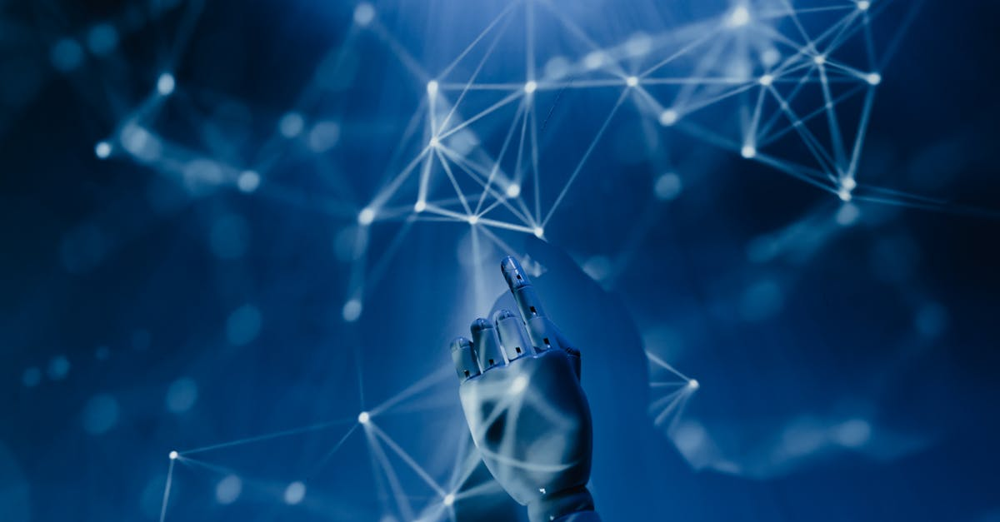
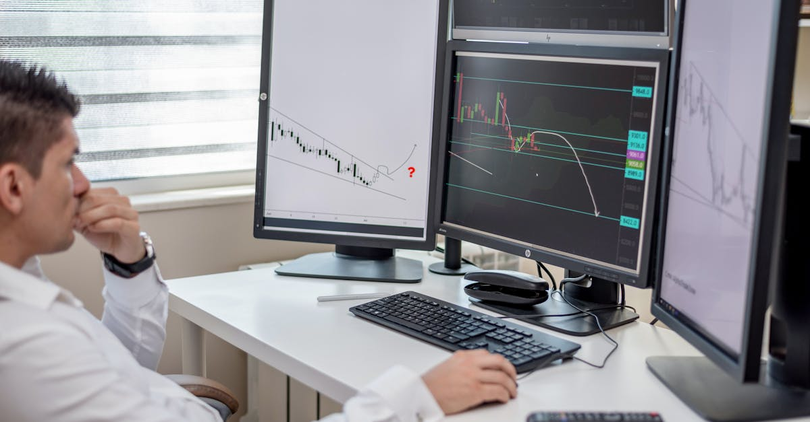

L'acquisition stratégique de Meta : un pas de géant vers l'IA incarnée
L'actualité a fait grand bruit dans le monde de la tech : Meta, le géant de Mark Zuckerberg, a récemment acquis Assured Robot Intelligence, une startup spécialisée dans la robotique humanoïde. Cette manœuvre n'est pas anodine ; elle marque une étape décisive dans la course à l'intelligence artificielle, signalant une ambition claire de la part de Meta de non seulement concevoir des IA de pointe, mais aussi de les doter d'une présence physique, d'un corps capable d'interagir avec le monde réel. L'objectif avoué est de « renforcer ses modèles d'IA pour les robots », ouvrant la voie à une nouvelle génération d'agents intelligents.
👉 À lire : IA de Meta : 10 millions de conversations/semaine, quel impact ?
Pourquoi un tel engouement pour l'IA humanoïde ? La réponse réside dans la notion d'IA incarnée. Jusqu'à présent, une grande partie de l'IA opère dans le domaine numérique, traitant des données, générant du texte ou des images. Mais pour que l'IA atteigne son plein potentiel, notamment dans des environnements complexes et imprévisibles, elle doit pouvoir percevoir, agir et apprendre dans le monde physique. Un robot humanoïde, par sa capacité à manipuler des objets, à se déplacer et à interagir de manière naturelle avec les humains et leur environnement, représente l'incarnation ultime de cette vision. C'est une passerelle entre le code binaire et la réalité matérielle.
👉 À lire : OpenAI : Le départ du chef de Sora et la quête d'un focus stratégique
Cette acquisition n'est pas seulement une question de hardware ; elle concerne surtout l'intégration profonde de l'intelligence logicielle dans des systèmes robotiques avancés. Il s'agit de doter ces robots de capacités cognitives améliorées, leur permettant de comprendre des contextes complexes, d'apprendre de leurs expériences et de s'adapter à des situations nouvelles. Imaginez des IA capables non seulement de comprendre une instruction orale, mais aussi de l'exécuter physiquement, en tenant compte des nuances de l'environnement. C'est une révolution qui, bien que lointaine pour le grand public, est déjà en marche dans les laboratoires. Les implications pour l'entraînement d'IA capables de naviguer des environnements dynamiques et imprévisibles sont colossales, un défi que les algorithmes de trading automatique, par exemple, connaissent bien lorsqu'ils doivent analyser et réagir aux marchés financiers fluctuants.
Comme le souligne un analyste fictif, le Dr. Élodie Dubois, spécialiste en robotique cognitive :
« L'acquisition d'Assured Robot Intelligence par Meta n'est pas qu'une simple transaction. C'est une déclaration d'intention. Meta cherche à construire l'infrastructure neuronale et physique pour les mondes de demain, qu'ils soient virtuels ou réels. C'est la convergence de la perception, de la cognition et de l'action qui définira la prochaine ère de l'IA. »Cette convergence est précisément ce qui rend cette avancée si pertinente, même pour des domaines apparemment éloignés comme le trading de cryptomonnaies, où la perception fine des signaux du marché et l'exécution d'actions précises sont primordiales.

Au-delà des usines : la vision d'une IA humanoïde autonome
Longtemps cantonnés aux chaînes de montage industrielles, les robots sont en passe de transformer radicalement leur rôle. L'ambition de Meta, en investissant massivement dans la robotique humanoïde, dépasse largement le cadre de l'automatisation répétitive. Il s'agit de créer des agents autonomes, capables de fonctionner de manière indépendante dans des environnements non structurés, comme nos maisons, nos villes ou nos bureaux. Ces futurs humanoïdes pourraient remplir des fonctions d'assistance personnelle, de services à la personne, voire de compagnons, révolutionnant notre quotidien de manière inimaginable il y a encore quelques décennies.
Mais pour atteindre cette autonomie, les défis sont immenses. Un robot humanoïde doit maîtriser une multitude de compétences : la perception visuelle et auditive pour interpréter son environnement, la motricité fine pour manipuler des objets avec dextérité, la compréhension du langage naturel pour interagir avec les humains, et surtout, la capacité à prendre des décisions complexes en temps réel, face à l'incertitude. Il ne s'agit plus de suivre un programme préétabli, mais d'apprendre, de s'adapter et de résoudre des problèmes de manière créative. Imaginez un robot capable de comprendre une demande comme « range le salon » et de l'exécuter en identifiant les objets, en les classant et en les plaçant aux bons endroits, tout en évitant les obstacles et en interagissant avec les habitants.
Cette quête d'autonomie pour les robots humanoïdes résonne étrangement avec les exigences des systèmes d'intelligence artificielle dédiés au trading. Un agent IA de trading performant ne se contente pas d'exécuter des ordres ; il doit percevoir les signaux faibles du marché, comprendre les dynamiques sous-jacentes, anticiper les mouvements futurs et prendre des décisions d'investissement critiques, tout cela de manière autonome et 24h/24. La capacité d'un robot à naviguer dans un environnement physique complexe sans intervention humaine est le miroir de la capacité d'un algorithme à naviguer dans la volatilité des marchés financiers, gérant les risques et saisissant les opportunités avec une réactivité inégalée.
Les progrès dans les modèles d'IA pour la robotique, notamment en matière de planification et de raisonnement, auront des retombées directes sur le développement d'agents IA dans d'autres domaines. La robustesse et la flexibilité nécessaires pour qu'un robot humanoïde opère dans le monde réel sont des qualités intrinsèques que l'on recherche également dans les algorithmes de trading. Il s'agit de construire des systèmes capables de faire face à l'imprévu, de s'adapter aux changements et de maintenir une performance optimale, qu'il s'agisse de manipuler un objet fragile ou de gérer un portefeuille de cryptomonnaies en période de forte turbulence.
Le rôle crucial des données et de l'apprentissage machine avancé
Au cœur de toute intelligence artificielle, qu'elle soit incarnée dans un robot ou opérant sur les marchés financiers, se trouve la donnée. L'entraînement d'une IA capable de piloter un robot humanoïde exige des volumes de données absolument colossaux et d'une diversité sans précédent. Il ne s'agit plus seulement de traiter des images ou du texte, mais des flux multisensoriels : vision stéréoscopique, données tactiles, capteurs de position, données de mouvement, et bien plus encore. Chaque interaction du robot avec son environnement génère des informations précieuses qui sont ensuite utilisées pour affiner ses modèles, améliorer sa compréhension du monde et optimiser ses actions.
Pour donner un sens à cette masse de données, des techniques d'apprentissage machine avancé sont indispensables. L'apprentissage par renforcement, par exemple, permet à l'IA d'apprendre par essais et erreurs, en recevant des récompenses pour les actions réussies et des pénalités pour les échecs. C'est ainsi qu'un robot peut apprendre à marcher, à attraper un objet ou à naviguer dans un espace inconnu. Le transfert learning, quant à lui, permet à une IA d'appliquer des connaissances acquises dans une tâche à une nouvelle tâche, accélérant considérablement le processus d'apprentissage et réduisant le besoin de données spécifiques à chaque nouvelle situation.
Ces avancées technologiques ne sont pas confinées au domaine de la robotique. Le parallèle avec l'IA de trading est frappant. Un agent IA performant sur les marchés cryptos doit également digérer des quantités massives de données en temps réel : historiques de prix, volumes de transactions, actualités économiques, sentiment des réseaux sociaux, données on-chain, etc. La capacité à extraire des patterns significatifs de ce déluge d'informations, à identifier des corrélations cachées et à prédire des mouvements futurs dépend directement de la qualité des algorithmes d'apprentissage machine utilisés et de la richesse des données d'entraînement.
Le Dr. Anya Sharma, experte en apprentissage profond, observe :
« Que ce soit pour un robot apprenant à empiler des blocs ou pour un algorithme de trading identifiant des opportunités, la faim de données et la sophistication des méthodes d'apprentissage sont les mêmes. La capacité à traiter des informations hétérogènes et à en extraire des connaissances actionnables est la pierre angulaire de toute IA performante. »L'investissement de Meta dans l'IA humanoïde n'est donc pas seulement un pari sur les robots, mais un investissement dans les fondations mêmes de l'intelligence artificielle, des fondations qui bénéficieront à l'ensemble de l'écosystème IA, y compris les agents dédiés à la finance décentralisée.

De la perception robotique à la prise de décision financière : passerelles inattendues
Il peut sembler contre-intuitif de lier les avancées en perception robotique à la prise de décision financière. Pourtant, les principes fondamentaux qui guident un robot humanoïde dans son interaction avec le monde physique partagent des similitudes étonnantes avec ceux qu'un agent IA utilise pour naviguer les marchés cryptos. La perception, dans les deux cas, est la capacité à interpréter des signaux complexes et souvent ambigus pour construire une représentation utile de l'environnement.
Pour un robot, cela signifie comprendre la profondeur d'une scène, identifier des objets malgré des occlusions partielles, prédire la trajectoire d'un objet en mouvement ou reconnaître les expressions faciales humaines. Pour une IA de trading, c'est la capacité à discerner un signal d'achat ou de vente au milieu du bruit du marché, à identifier une tendance émergente malgré la volatilité, ou à détecter des anomalies qui pourraient indiquer une opportunité ou un risque. Dans les deux cas, il s'agit de transformer des données brutes en informations actionnables, une tâche qui exige des modèles d'IA sophistiqués et une puissance de calcul considérable.
Les progrès en vision par ordinateur et en traitement du langage naturel, essentiels pour les robots humanoïdes, ont des applications directes en finance. Par exemple, la reconnaissance d'images peut être utilisée pour analyser des graphiques de cours complexes, tandis que le traitement du langage naturel permet de scruter des milliers d'articles de presse, de tweets ou de rapports financiers pour en extraire le sentiment du marché. La capacité d'un robot à réagir instantanément à un événement imprévu dans son environnement physique se traduit, pour un agent IA financier, par la rapidité avec laquelle il peut ajuster ses stratégies face à une nouvelle information économique ou un mouvement de marché soudain.
L'intégration de capteurs de plus en plus précis et la capacité à fusionner ces données pour une compréhension holistique de l'environnement sont des domaines d'innovation qui bénéficient à tous les types d'IA. Un robot qui apprend à éviter une collision avec un objet mobile développe une forme d'intelligence prédictive et de gestion des risques. Cette même intelligence, transposée au domaine financier, permettrait à un agent IA de prédire une chute potentielle du marché et d'ajuster son portefeuille en conséquence. C'est cette robustesse et cette capacité à anticiper qui font la force des systèmes autonomes, qu'ils soient faits de silicium et de métal, ou de code et d'algorithmes.
Les enjeux éthiques et la confiance dans les systèmes autonomes
L'avènement des robots humanoïdes autonomes, tout comme l'essor des agents IA de trading, soulève des questions éthiques fondamentales et met en lumière l'importance cruciale de la confiance. Lorsqu'une IA prend des décisions qui ont des conséquences réelles – qu'il s'agisse d'un robot interagissant avec une personne âgée ou d'un algorithme gérant des millions d'actifs financiers – la transparence, l'imputabilité et la sécurité deviennent des préoccupations centrales. Comment s'assurer que ces systèmes agissent dans l'intérêt de l'humain et respectent des principes éthiques ?
Pour les robots humanoïdes, les enjeux sont multiples : la protection de la vie privée (avec des capteurs vidéo et audio omniprésents), la sécurité physique (un robot défectueux pourrait causer des dommages), et la question de la responsabilité en cas d'erreur. Si un robot blesse quelqu'un ou endommage une propriété, qui est responsable ? Le fabricant, le programmeur, l'opérateur ? Ces questions sont complexes et nécessitent une réflexion approfondie, des cadres réglementaires adaptés et des normes de conception rigoureuses pour garantir la fiabilité et la prévisibilité du comportement de l'IA.
Le parallèle avec l'IA crypto trading est évident. Les utilisateurs qui confient leurs investissements à un agent IA doivent avoir une confiance absolue dans sa capacité à opérer de manière sécurisée et éthique. Cela signifie que l'IA doit être programmée pour minimiser les risques, éviter les manipulations de marché, et agir avec intégrité. La transparence des algorithmes, bien que souvent difficile à atteindre en raison de leur complexité (boîtes noires), est essentielle pour bâtir cette confiance. Des mécanismes d'audit, des garde-fous humains et des protocoles de sécurité robustes sont indispensables pour assurer que l'IA respecte les règles et les attentes des utilisateurs.
Le Professeur Marc Lefèvre, éthicien de l'IA, affirme :
« Que l'IA ait un corps ou qu'elle opère sur les marchés, la question de la confiance est universelle. Nous devons concevoir des systèmes non seulement intelligents, mais aussi fiables, transparents et responsables. L'ingénierie éthique n'est plus une option, c'est une nécessité absolue pour le déploiement à grande échelle de toute IA autonome. »L'acquisition de Meta, en accélérant le développement de l'IA incarnée, nous pousse à confronter ces questions plus tôt que prévu, ouvrant un dialogue crucial sur l'avenir de notre interaction avec des intelligences artificielles de plus en plus sophistiquées et autonomes.

L'avenir de l'IA : Vers une synergie homme-machine et des marchés plus intelligents
L'investissement de Meta dans la robotique humanoïde est un indicateur fort de la direction que prend l'intelligence artificielle : celle d'une intégration plus profonde et plus tangible dans notre réalité. L'avenir de l'IA ne se limitera pas à des assistants vocaux ou des algorithmes de recommandation ; il s'agira d'agents intelligents capables d'opérer dans le monde physique, de comprendre nos intentions et d'exécuter des tâches complexes de manière autonome. Cette synergie homme-machine promet de débloquer de nouvelles frontières en matière de productivité, de créativité et de bien-être.
Cette vision d'une IA omniprésente et capable de s'adapter à des environnements variés a des implications profondes pour de nombreux secteurs, y compris la finance. Les avancées en matière de perception, de cognition et d'action dans le domaine des robots humanoïdes vont inévitablement se traduire par des améliorations significatives pour les agents IA spécialisés. Imaginez des IA de trading bénéficiant de modèles de prédiction encore plus précis, capables de réagir à des micro-événements du marché avec une finesse et une rapidité que l'œil humain ne peut égaler, et ce, 24 heures sur 24, 7 jours sur 7.
Les marchés financiers, en particulier le marché des cryptomonnaies, sont par nature des écosystèmes complexes et dynamiques. L'apport d'agents IA hautement sophistiqués, nourris par les mêmes principes d'apprentissage et d'autonomie que ceux développés pour les robots humanoïdes, pourrait rendre ces marchés plus efficients. Une meilleure analyse des données, une exécution optimisée des transactions, et une gestion des risques plus proactive pourraient potentiellement réduire la volatilité excessive et offrir de nouvelles opportunités aux investisseurs. L'objectif n'est pas de remplacer l'humain, mais de lui fournir des outils d'une puissance inégalée.
Comme l'a si bien dit un expert en futurologie technologique, M. David Chen :
« L'IA humanoïde est le banc d'essai ultime pour l'intelligence artificielle générale. Chaque percée dans la capacité d'un robot à interagir avec le monde réel se répercutera sur toutes les applications de l'IA, y compris celles qui gèrent nos finances. Nous sommes à l'aube d'une ère où l'intelligence artificielle ne sera plus seulement un outil, mais un partenaire actif et intelligent dans tous les aspects de notre vie. »Cette perspective ouvre un horizon fascinant, où les compétences développées pour qu'un robot puisse servir un café pourraient, paradoxalement, aider à optimiser un portefeuille de cryptomonnaies.
Conclusion : L'Ère des Agents Intelligents : Un Horizon en Pleine Expansion
L'acquisition stratégique d'Assured Robot Intelligence par Meta n'est pas un simple fait divers technologique ; c'est un signal fort de l'évolution de l'intelligence artificielle vers une forme plus incarnée et autonome. En cherchant à doter ses IA de corps physiques, Meta ne fait pas que repousser les limites de la robotique ; elle investit dans les fondations mêmes de l'intelligence artificielle générale, celles qui permettront aux machines de percevoir, de comprendre et d'agir dans le monde réel avec une sophistication croissante.
Les implications de cette avancée sont vastes et transversales. Les compétences développées pour qu'un robot humanoïde puisse naviguer un environnement complexe, apprendre de ses erreurs et prendre des décisions autonomes sont intrinsèquement liées aux qualités que nous recherchons dans des agents IA performants dans d'autres domaines, notamment celui du trading de cryptomonnaies. La capacité à traiter des volumes massifs de données hétérogènes, à identifier des patterns subtils et à exécuter des actions précises et opportunes, 24 heures sur 24, est au cœur de ces deux défis.
L'avenir est à l'ère des agents intelligents. Qu'ils soient sous forme de robots humanoïdes interagissant avec nous physiquement, ou d'algorithmes sophistiqués gérant nos actifs numériques, ces intelligences artificielles promettent de transformer notre manière de vivre, de travailler et d'investir. La confiance, l'éthique et la transparence seront les piliers sur lesquels cette nouvelle ère devra être bâtie. Pour les pionniers du trading de cryptomonnaies, cette évolution de l'IA annonce des outils toujours plus puissants, capables d'appréhender la complexité des marchés avec une acuité inégalée. L'horizon des agents IA est en pleine expansion, et il est temps de s'y préparer.